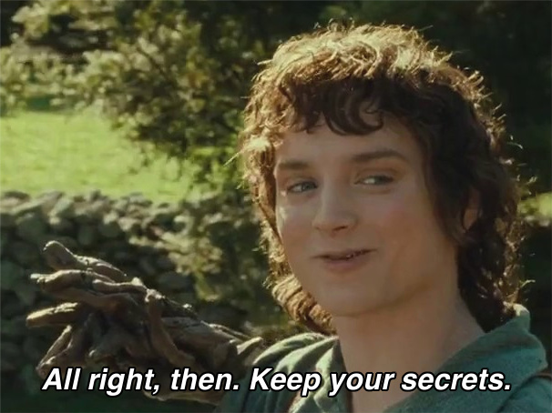
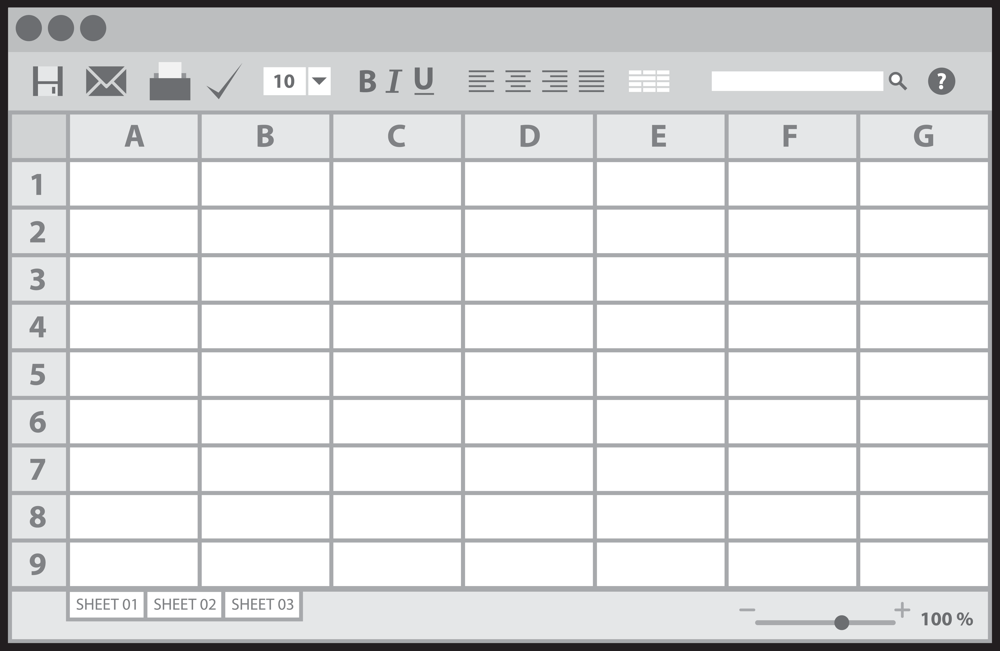

2023-04-27
Using R and/or SAS:
Regression models summarize data, but the standard output of a regression analysis is not automatically informative.
Call: glm(formula = hp ~ cyl, data = mtcars)
Coefficients:
(Intercept) cyl
-51.05 31.96
Degrees of Freedom: 31 Total (i.e. Null); 30 Residual
Null Deviance: 145700
Residual Deviance: 44740 AIC: 328.6
Marginal effects can help interpreting regression models (Norton, Dowd, and Maciejewski 2019).
For simple models, the marginal effect is straightforward.
For more complex models, marginal effects are harder to obtain
R packages were developed to facilitate marginal effect estimation
marginaleffects (Arel-Bundock 2023)emmeans (includes the older lsmeans)Equivalent SAS options:
ESTIMATELSMEANSData from the Canadian Community Health Survey (CCHS) 2015 - Nutrition is used.

# Loading
load(file = here::here("data","processed","cchs2015_demonstration.rdata"))
# Select only some variables
final <-
cchs2015_demonstration |>
dplyr::select(participantid, r24_weekend, age, sex, education,
smoking, phys_act_mod, self_reported_bp,
energy, sodium, fibers)
# preview
head(final,3)# A tibble: 3 × 11
participantid r24_weekend age sex education smoking phys_act_mod
<dbl> <dbl> <dbl> <fct> <dbl> <dbl> <dbl>
1 9261 1 20 Male 2 0 4.5
2 1881 0 56 Male 3 0 5.25
3 16071 1 35 Female 4 0 2.25
# ℹ 4 more variables: self_reported_bp <dbl>, energy <dbl>, sodium <dbl>,
# fibers <dbl>For descriptive purpose, we wish to estimate self-reported energy intakes according to age (years), sex and moderate/vigorous physical activity (hours/week).
Model (estimator) \(\text{Energy}_i=\beta_0 + \beta_1\text{age} + \beta_2\text{female} + \beta_3\text{phys. act.} +\epsilon_i\)
SAS equivalent:
What can we say based on this output?
Call: glm(formula = energy ~ age + sex + phys_act_mod, family = gaussian(link = "identity"),
data = final)
Coefficients:
(Intercept) age sexFemale phys_act_mod
2492.535 -7.477 -539.742 21.046
Degrees of Freedom: 997 Total (i.e. Null); 994 Residual
(2 observations deleted due to missingness)
Null Deviance: 835200000
Residual Deviance: 736100000 AIC: 16330Helpful package to assess coefficients and generate standard output:
broom::tidy(model)parameters::parameters(model)gtsummary::tbl_regression()SAS equivalent: ods output <...>; (see procedure documentation or use ods trace on;)
Linear regression models have 4 key assumptions.
To calculate model errors (residuals): residuals(lm1)
What can we say about this graph?
Of note, log transformation not shown here for simplicity.
Specify Restricted Cubic Spline (RCS) transformation with the rms package.
rms::rcs(variable,knots)
| Characteristic | Beta | 95% CI1 | p-value |
|---|---|---|---|
| Age, years | |||
| rms::rcs(age, 4)age | -16 | -34, 1.0 | 0.065 |
| rms::rcs(age, 4)age' | 21 | -26, 69 | 0.4 |
| rms::rcs(age, 4)age'' | -65 | -234, 104 | 0.5 |
| sex | |||
| Male | — | — | |
| Female | -545 | -653, -436 | <0.001 |
| Moderate or vigorous physical activity, hours/week | |||
| rms::rcs(phys_act_mod, 3)phys_act_mod | -13 | -61, 36 | 0.6 |
| rms::rcs(phys_act_mod, 3)phys_act_mod' | 90 | -34, 213 | 0.2 |
| 1 CI = Confidence Interval | |||
… How can we interpret this revised model?
Marginal Means/Least-square means: “Predictions of a model, averaged across a ‘reference grid’ of categorical predictors.”
More flexible analysis with marginaleffects
Term Value Mean Pr(>|z|) 2.5 % 97.5 %
sex Male 2157 <0.001 2040 2274
sex Female 1612 <0.001 1493 1732
Results averaged over levels of: sex
Columns: rowid, term, value, sex, estimate, p.value, conf.low, conf.high, age, energy, phys_act_mod, wts Least-Square Means: LS-means are predicted population margins—that is, they estimate the marginal means over a balanced population.
SAS equivalent: LSMEANS sex ;
Term Mean Pr(>|z|) 2.5 % 97.5 %
Male - Female 545 <0.001 436 653
Results averaged over levels of: sex
Columns: term, estimate, p.value, conf.low, conf.high SAS equivalent: LSMEANS sex / diff=all cl ;
Plot specific parameters with marginaleffects::plot_predictions
SAS equivalent: proc plm ...;
Alternative to representative values: use mean of all covariates, including categorical ones (coded as dummy covariates).
mean(final$age)= 45.53mean(final$female) = 0.5mean(final$phys_act_mod) = 3.52Use marginaleffects::avg_comparisons
E(energy|age=60, Z) - E(energy|age=30, Z)
Term Contrast Estimate Std. Error z Pr(>|z|) 2.5 % 97.5 %
age 60 - 30 -200 68.9 -2.91 0.00365 -335 -65.2
Columns: term, contrast, estimate, std.error, statistic, p.value, conf.low, conf.high E(energy|age=75th, Z) - E(energy|age=25th, Z)
Term Contrast Estimate Std. Error z Pr(>|z|) 2.5 % 97.5 %
age Q3 - Q1 -126 78.2 -1.61 0.107 -279 27.3
Columns: term, contrast, estimate, std.error, statistic, p.value, conf.low, conf.high marginaleffects + ggplot2store + proc plm + proc sgplotestimate + ods output <...>;SHN Coding Club